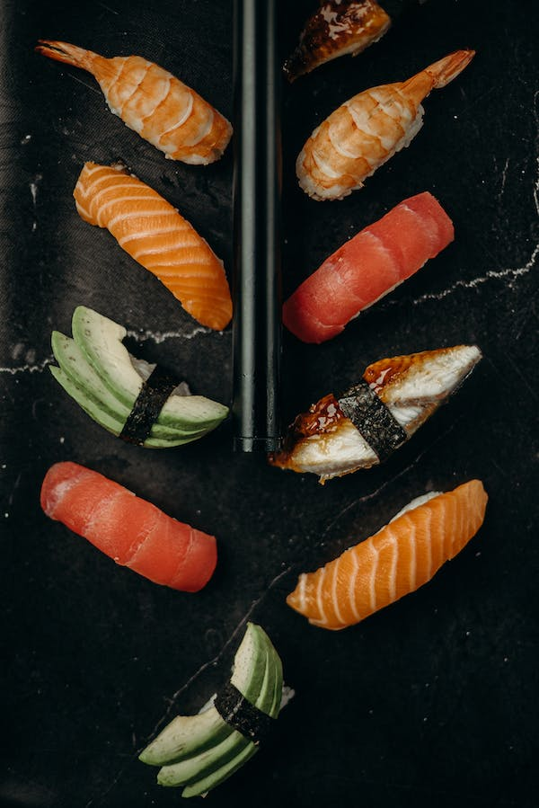

Sushi

Savor the delightful burst of fresh flavors with Sushi, a popular Japanese dish that's enjoyed worldwide.
Its base of vinegared rice perfectly complements a variety of ingredients, typically including raw or cooked seafood, vegetables, and sometimes tropical fruits. The sushi roll is often wrapped in nori (seaweed), adding a unique taste and texture. It's a deliciously versatile dish that can cater to an array of flavor profiles and dietary preferences.
- 2 cups sushi rice
- 1/4 cup rice vinegar
- 8 sheets nori (seaweed)
- 1/2 lb sushi-grade raw fish (like tuna or salmon), thinly sliced
- 1 cucumber, cut into thin strips
- 1 avocado, thinly sliced
- Soy sauce, for serving
- Pickled ginger, for serving
- Wasabi, for serving
- Rinse the sushi rice under cold water until the water runs clear. Cook the rice according to the package instructions.
- While the rice is still hot, add the rice vinegar and mix well. Allow the rice to cool to room temperature.
- Lay out the nori sheet on a bamboo sushi mat. Spread a thin layer of sushi rice on the sheet, leaving about 1 inch clear at the top.
- Arrange the fish, cucumber, and avocado in a line down the center of the rice.
- Roll the sushi using the mat, applying some pressure to keep it tight. Wet the clear part of the nori slightly to help it stick and seal the roll.
- Use a sharp knife to cut the sushi roll into bite-sized pieces.
- Serve with soy sauce, pickled ginger, and wasabi on the side. Enjoy your homemade sushi!